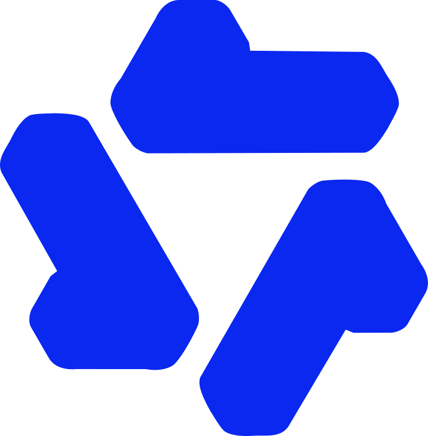

من «جرّبت ChatGPT» إلى إنتاجية تُقاس
اليوم 1: أساسيات العمل مع الذكاء الاصطناعي
خمسة أيام، وحقيبة إنتاجية تكبر كل يوم
اليوم 1 · الأساس
أين يساعد الذكاء الاصطناعي وأين يضرّ، الطلاقة 4D، الاستخدام الآمن، إطار RICE.
أوامر وسياق عملاليوم 2 · المهام اليومية
المراسلات، المستندات الطويلة، الجداول والبيانات، العروض والصور.
مخرجات جاهزةاليوم 3 · المعرفة وسير العمل
البحث العميق والتحقق، دفاتر المعرفة، المساعدات المخصّصة، إعادة تصميم سير العمل.
مساعد مُختبَراليوم 4 · الوكلاء والبناء
الوكلاء والمهام المجدولة، البرمجة التوليدية، التبنّي المسؤول.
تطبيق يعملالمهارة ليست في التطبيق، بل في طريقة العمل معه
- 40% مفاهيم و60% تطبيق. كل جلسة تنتهي بتمرين مدته 25 دقيقة في تطبيقات حقيقية.
- محايدة تجاه التطبيقات. ما نتعلمه يعمل في ChatGPT وClaude وGemini وCopilot وHUMAIN Chat، لأن التطبيقات تتغيّر كل شهر.
- نقيس ولا نخمّن. كل تمرين يسجّل الوقت قبل وبعد، والجودة مقابل معيار مكتوب.
- آمن من الدقيقة الأولى. لا بيانات حقيقية؛ كل الملفات تدريبية.
ما نفترض أنك تعرفه
استخدام المتصفح ورفع الملفات، وتجربة واحدة على الأقل مع تطبيق محادثة.
ما لا تحتاجه
البرمجة، أو أدوات الأتمتة، أو اشتراكات مدفوعة؛ الخطط المجانية تكفي لكل التمارين.
ما ستخرج به
حقيبة إنتاجية شخصية: أوامر، وسياق عمل، ومساعد مخصّص، وتطبيق، وخطة تبنٍّ لثلاثين يومًا.
مركز الواحة للخدمات المشتركة
جهة حكومية افتراضية تقدّم خدمات الموارد البشرية والمالية والمشتريات والاتصال وخدمة المستفيدين لعدة جهات. أنت موظف فيها، أو متدرّب تعاوني انضم إليها هذا الفصل.
ملفات واقعية، تدريبية بالكامل
| الملف | الشكل | نستخدمه في |
|---|---|---|
| محضر لجنة إطلاق بوابة الخدمات الذاتية | PDF · 4 صفحات | إطار RICE، الاستخراج، التحديثات |
| استفسارات المستفيدين للربع الثالث | XLSX · نحو 450 صفًا | معالجة البيانات، التحليل، الرسوم |
| تقرير الأداء الربعي | PDF · 12 صفحة | التلخيص، عرض القرار، التحقق |
| سياسات المركز (العمل المرن، المشتريات، أسئلة الموظفين) | دفتر المعرفة، المساعد المخصّص | |
| عروض أسعار من ثلاثة موردين، بريد وارد، تفريغ اجتماع | PDF · TXT | المقارنة، المراسلات، المحاضر |
| مجلد التعاميم الأسبوعية، ميزانية التدريب، دليل الهوية | DOCX · XLSX · PDF | الوكلاء، الجداول، الصور والعروض |
كل الأسماء والأرقام والجهات افتراضية، ويولّدها labs/tools/prepare_files.py. أرقام الهويات والجوالات في الملفات وهمية لكنها تشبه الحقيقية، لنتدرّب على معالجتها.
جدول اليوم الأول
جهّز حساباتك قبل أن تحتاجها
- افتح صفحة الدورة: فيها الشرائح، وأدلة التمارين، وملفات التدريب.
- سجّل الدخول في تطبيقَي محادثة على الأقل، لأننا سنقارن بينهما كثيرًا.
- أنشئ نسخة من سجلّ الإنتاجية (جدول بسيط) واحتفظ به مفتوحًا طوال الأسبوع.
- كل دليل تمرين يبدأ بـالهدف والملفات، وينتهي بـأسئلة تحقّق وتمرين إضافي ✱.
 ChatGPT
ChatGPT
 Claude
Claude
 Gemini
Gemini
 Copilot
HUMAIN Chat
Gemini Notebook
Copilot
HUMAIN Chat
Gemini Notebook
الذكاء الاصطناعي في العمل: أين يساعد وأين يضرّ
- تقرأ أدلة الإنتاجية بحدودها: أين المكاسب الكبيرة وأين الخسارة
- تشرح كيف يعمل تطبيق الذكاء الاصطناعي: التطبيق والوكيل والنموذج والأدوات
- ترسم خريطة مهامك وتسجّل خط الأساس الذي ستقيس عليه طوال الأسبوع
إلى أي حدّ ستراجع المخرج في كل حالة؟
من 1 (أعتمده كما هو) إلى 5 (أتحقق من كل سطر). اكتب رقمك لكل مهمة.
أ
تلخيص تقرير من 40 صفحة لاجتماع اليوم
ب
شرح خبر نُشر الأسبوع الماضي
ج
مراجعة عقد من 50 صفحة قبل التوقيع
د
كتابة نص من 100 كلمة بالضبط
هـ
ذكر ثلاث مواد من نظام سعودي مع أرقامها
و
صياغة رسالة شكر لزميل
من نافذة محادثة إلى زميل ينفّذ
المكاسب حقيقية، لكنها أكبر في المهام المنظّمة القابلة للفحص
المصدر: Stanford HAI, AI Index 2026، الفصل 4 (مراجعة دراسات Brynjolfsson وآخرين 2025، Cui وآخرين 2025، Ju وAral 2025).
داخل الحدّ تتسارع، وخارجه تخطئ بثقة
داخل الحدّ
مهام أكثر بـ12%، وأسرع بـ25%، وجودة أعلى بـ40%.
خارج الحدّ
من استخدم الذكاء الاصطناعي كان أقل احتمالًا للإجابة الصحيحة بـ19 نقطة مئوية.
والحدّ غير مرئي: مهمتان متشابهتان قد تقعان على جانبين مختلفين.
شعروا أنهم أسرع بـ20%، وكانوا أبطأ بـ19%
تجربة عشوائية على 16 مطوّرًا خبيرًا و246 مهمة حقيقية في مشاريع يعرفونها جيدًا.
المخرج نقطة بداية، ومراقبة الجودة هي العمل
يعاملون مخرج الذكاء الاصطناعي نقطة بداية لا إجابة نهائية (Microsoft Work Trend Index 2026)
يرون «مراقبة جودة المخرجات» أهم مهارة في عصر الذكاء الاصطناعي (المصدر نفسه)
تلقّوا خلال الشهر الماضي «محتوى مصقولًا فارغًا» (workslop) من زملائهم (BetterUp وStanford 2025)
أربعة مكوّنات تعمل معًا
التطبيق
الواجهة التي تفتحها: ChatGPT، Claude، Gemini، HUMAIN Chat.
الوكيل
يقرأ أمرك ويقسّمه إلى خطوات ويحدّد ما يحتاجه من أدوات ويتابع حتى النتيجة.
النموذج
«العقل» الذي يفكّر به الوكيل: نموذج لغوي كبير يتوقّع النص التالي.
الأدوات
«الجسد»: البحث في الويب، قراءة الملفات، تنفيذ الحسابات، إنشاء الصور.
إكمال تلقائي متطوّر جدًا، لا محرّك بحث
| الكلمة التالية | الاحتمال |
|---|---|
| إفادتنا | 41% |
| التكرم | 27% |
| تزويدنا | 19% |
| كلمات أخرى | 13% |
- يكتب النموذج كلمة بعد كلمة، كلٌّ منها الأرجح بعد ما سبق.
- لذلك يتقن «الطرق المطروقة»: التلخيص، إعادة الصياغة، الشرح الشائع.
- ولذلك أيضًا قد يكتب ما يبدو صحيحًا بدل ما هو صحيح: الأسماء والأرقام والمراجع.
- الأمر نفسه مرتين قد يعطي نتيجتين مختلفتين. جرّب ذلك في التمرين.
ابدأ بالفئة، ثم اختر التطبيق المعتمد في جهتك
| الفئة | أمثلة |
|---|---|
| مساعد محادثة عام | ChatGPTClaudeGeminiCopilotDeepSeek  Qwen |
| تطبيقات سعودية | HUMAIN Chat (علّام)IntellaLucidya |
| بحث بمصادر ومعرفة |  PerplexityGemini Notebook PerplexityGemini Notebook |
| داخل برامج المكتب | Microsoft 365 CopilotGemini في WorkspaceClaude لـ Excel وPowerPoint |
| وكلاء وبناء | ManusGenspark Claude Coworkإطلاق (Etlaq) Lovable Lovable Replit Replit |
أسماء التطبيقات أمثلة توضيحية فقط، ولا تُعدّ ترشيحًا أو اعتمادًا. تتغيّر الميزات والإتاحة في المملكة بسرعة؛ تحقّق منها عند الاستخدام.
أتمتة، وتعزيز، وتوكيل
الأتمتة
ينفّذ التطبيق مهمة محدّدة وفق تعليماتك.
«حوّل هذا المحضر إلى جدول مهام بالمسؤول والموعد.»
التعزيز
تفكّران معًا: تقترح وتعترض وتبنيان الفكرة خطوة خطوة.
«ساعدني أختبر هذه الخطة: ما أضعف افتراض فيها؟»
التوكيل
تُعدّ التطبيق ليعمل نيابةً عنك: معرفته وسلوكه، لا خطوة بعينها.
مساعد مخصّص يردّ على استفسارات الموظفين من السياسات.
سجلّ الإنتاجية: سطر واحد لكل مهمة
| المهمة | قبل (دقيقة) | بعد (دقيقة) | معيار القبول | تحقّق؟ | ما صحّحته |
|---|---|---|---|---|---|
| تحديث المدير بقرارات اللجنة | 35 | 12 | لا يتجاوز 180 كلمة، لكل بند مسؤول وموعد | بعد تصحيح | موعد منسوب لغير مصدره |
| الردّ على 8 رسائل واردة | 60 | 25 | كل ردّ يجيب عن السؤال المطروح فقط | نعم | نبرة رسمية زائدة في ردّين |
| الوقت «بعد» يشمل كتابة الأمر ومراجعة المخرج وتصحيحه، لا وقت التطبيق فقط. | |||||
الوقت
قِس الوقت «قبل» بالطريقة المعتادة على حالة مشابهة.
الجودة
اكتب معيار القبول قبل أن ترى المخرج.
الصدق
سجّل التجارب التي لم تنجح أيضًا؛ فهي ترسم حدودك.
خريطة مهامي وخط الأساس
labs/D1_1_task_map.html ↗ارسم مهامك على «الحدّ المتعرّج»، وجرّب مهمة واحدة في تطبيقين، وابدأ سجلّ الإنتاجية الذي سترافقه طوال الأسبوع.
- اكتب 6 إلى 8 مهام حقيقية تتكرّر في عملك أو دراستك 5 د
- قدّر الوقت ومستوى التحقق المطلوب لكل مهمة 5 د
- نفّذ مهمة واحدة في تطبيقين بالأمر نفسه، مرتين 8 د
- قارن النتائج وسجّل أول سطر في سجلّ الإنتاجية 5 د
- صنّف مهامك: أتمتة، تعزيز، توكيل، أو «لي وحدي» 2 د
- ✱ اسأل التطبيق: «كيف قد تخطئ في كل مهمة من هذه المهام؟»
زميلك يقول: «الذكاء الاصطناعي وفّر علي نصف وقتي». ما أفضل ردّ؟
استراحة 10 دقائق
التالي: الجلسة 2 · الطلاقة 4D والحدود والاستخدام الآمن
الطلاقة 4D والحدود والاستخدام الآمن
- تطبّق مهارات الطلاقة الأربع على أي مهمة وأي تطبيق
- تتوقّع أين سيخطئ النموذج: الدقائق المحدّدة، المعرفة المحلية، السياق الطويل، المجاملة
- تقرّر ما يجوز رفعه، وتعالج البيانات قبل رفعها
أربع مهارات لا تتغيّر حين تتغيّر التطبيقات
التفويض Delegation
أن تفهم مهمتك وقدرات التطبيق وحدوده، فتقرّر ما تسنده إليه وما يبقى لك.
هل المهمة مناسبة للتفويض أصلًا؟ وأي تطبيق يناسبها؟
الوصف Description
أن تشرح المهمة بأمر واضح، بالمعلومات والتوجيهات التي يحتاجها التطبيق.
ما الذي يحتاج التطبيق معرفته لينجز المهمة كما أتوقع؟
التحقّق Discernment
أن تحكم على صحة المخرج واكتماله، فقد يبدو مقنعًا رغم أخطائه.
هل أستطيع التحقق من هذه النتيجة؟ وكيف؟
المسؤولية Diligence
أن تحمي البيانات، وتراجع قبل الاعتماد، وتُفصح، وتتحمّل نتيجة الاستخدام.
هل أستطيع شرح هذا المخرج وتحمّل مسؤولية نشره؟
الآلية نفسها تصنع القدرة والحدّ
| الخاصية | يتقن | يتعثّر في | ما تفعله أنت |
|---|---|---|---|
| توقّع النص التالي | التلخيص، إعادة الصياغة، الشرح الشائع | الأسماء والتواريخ والأرقام والمراجع والروابط | تحقّق من كل تفصيل دقيق، واطلب المصدر |
| المعرفة | المواضيع الشائعة والمتكرّرة في التدريب | المحلي، والحديث بعد تاريخ التدريب، والنادر | فعّل البحث في الويب، أو أرفق المصدر |
| الذاكرة العاملة | ما يتسع بسهولة في المحادثة الحالية | المستندات والمحادثات الطويلة جدًا، وما في المنتصف | اختصر، ضع المهم في البداية وكرّره في النهاية |
| قابلية التوجيه | تعليمات قصيرة قابلة للفحص: «جدول»، «100 كلمة» | السلاسل الطويلة من الاستنتاج، والحساب الدقيق | اذكر الهدف لا الشكل فقط، واطلب الحساب بالأدوات |
كلما كان الادعاء أدق، احتاج تحققًا أكثر
| العبارة | النوع | كيف تتحقق |
|---|---|---|
| 87.3% | رقم دقيق بلا مصدر | طابقه مع البنك المركزي أو الهيئة العامة للإحصاء |
| تقرير هارفارد 2023 | مرجع قد يكون مُختلَقًا | ابحث عن العنوان كاملًا؛ إن لم يظهر فهو مختلق |
| «قال مسؤول…» | اقتباس بلا إثبات | ارجع إلى المصدر الرسمي للجهة |
| «جميع البنوك» | تعميم مطلق | انتبه لكلمات «جميع» و«دائمًا» و«أبدًا» |
ما في منتصف النص الطويل يُنسى أولًا
- تنخفض الدقة بأكثر من 30% حين تقع المعلومة المهمة في منتصف سياق طويل (Liu وآخرون، 2023).
- ضع التعليمة المهمة في البداية، وكرّرها في النهاية.
- المحادثة الطويلة تتدهور: ابدأ محادثة جديدة بملخص مركّز.
- التطبيق لا يتعلّم من تصحيحاتك بين المحادثات، إلا ما تحفظه أنت في الذاكرة أو المشروع.
يميل إلى موافقتك، والإطالة، والثقة الزائدة
المجاملة
يوافق على افتراضك الخاطئ إذا بدا أنك مقتنع به.
الإطالة
يكتب ثلاث فقرات حيث تكفي جملة.
الحذر الزائد
يرفض أحيانًا طلبًا عاديًا أو يملؤه بالتحفّظات.
ثقة غير معايَرة
نبرته الواثقة لا تعني أن الإجابة صحيحة.
أربع وثائق تحكم استخدامك في المملكة
مبادئ الذكاء الاصطناعي التوليدي · سدايا 2024
نسختان: للجهات الحكومية وللأفراد. لا معلومات مصنّفة في تطبيقات خارجية، وتحقّق من المخرجات، وأفصح عن المحتوى المولّد.
نظام حماية البيانات الشخصية
ساري منذ سبتمبر 2023. الحدّ الأدنى من البيانات، وأساس نظامي للمعالجة، وضوابط على نقلها خارج المملكة.
سياسة تصنيف البيانات · مكتب إدارة البيانات الوطنية
أربعة مستويات: سري للغاية، سري، مقيّد، عام. التصنيف عند الإنشاء، والتجميع يأخذ أعلى مستوى.
مبادئ أخلاقيات الذكاء الاصطناعي · سدايا
سبعة مبادئ: النزاهة والإنصاف، الخصوصية والأمن، الإنسانية، المنافع الاجتماعية والبيئية، الموثوقية والسلامة، الشفافية، المساءلة.
ماذا يجوز رفعه، وإلى أين؟
| المستوى | مثال من مركز الواحة | تطبيق عام (حساب شخصي) | تطبيق معتمد في الجهة |
|---|---|---|---|
| عام | التقرير السنوي المنشور، مؤشرات منشورة | نعم | نعم |
| مقيّد | تقرير أداء داخلي، محضر لجنة | لا | بحسب سياسة الجهة |
| سري | خطة استجابة لحادث أمني غير معلنة | لا | فقط إن اعتُمد لهذا المستوى |
| سري للغاية | — | لا | لا، إلا ببيئة مخصّصة ومعتمدة |
هل البيانات ضرورية؟ وهل تكشف شخصًا أو معلومة غير قابلة للمشاركة؟
شارك
- نقاط منشورة في التقرير السنوي
- مؤشرات مجمّعة لا تحدّد أفرادًا
- سياسة منشورة للعموم
عالج أولًا
- مسودة ردّ فيها اسم المستفيد وجواله
- ملف فيه أرقام معاملات (يمكن ربطها بشخص)
- جدول درجات بأسماء الطلاب
لا تشارك أبدًا
- تقرير طبي مرفق بطلب موظف
- خطة استجابة لحادث أمني غير معلنة
- كلمات المرور، الحسابات البنكية
ثلاث طرق، من الأخف إلى الأقوى
| الطريقة | ماذا تفعل | قبل | بعد |
|---|---|---|---|
| الحجب Masking | تستبدل جزءًا من القيمة برموز | 1023456789 | ******6789 |
| الترميز Pseudonymisation | تستبدل المعرّف برمز، وتحفظ جدول الربط محليًا | سارة العتيبي | R-04 |
| إخفاء الهوية Anonymisation | تزيل المعرّفات المباشرة وغير المباشرة أو تعمّمها | سارة، 37 عامًا، فرع عرعر | الفئة 35–44، المنطقة الشمالية |
العناصر النائبة تحفظ المعنى وتُبقي الهوية عندك
اختبر الحدود، ثم عالج البيانات
labs/D1_2_edges_and_safety.html ↗أربعة اختبارات قصيرة تكشف أين يخطئ التطبيق، ثم تجهيز ملفين حقيقيي الشكل للرفع الآمن.
- اختبار التفاصيل: ثلاث مواد نظامية بأرقامها، ثم تحقّق 5 د
- اختبار المعرفة: سؤال محلي حديث، بالبحث وبدونه 4 د
- اختبار المجاملة: افتراض خاطئ بثقة، ثم «اختلف معي» 4 د
- عالج طلب التسهيلات الوظيفية بعناصر نائبة 5 د
- رمّز جدول الاستفسارات واحفظ جدول الربط محليًا 7 د
- ✱ اختبار المنتصف: تعليمة مدفونة في نص طويل
تريد تحليل ملف شكاوى فيه أرقام معاملات بدل الأسماء. ما الإجراء الصحيح؟
استراحة 20 دقيقة
التالي: الجلسة 3 · هندسة الأوامر بإطار RICE
هندسة الأوامر بإطار RICE
- تكتشف ما يخمّنه التطبيق نيابةً عنك حين يكون أمرك عامًا
- تكتب أمرًا بالدور والتعليمات والسياق والتوقّع
- تحدّد الهدف ومعيار القبول قبل أن ترى المخرج
كل معلومة لم تكتبها، يخمّنها التطبيق
بأي صفة أكتب؟
موظف؟ مستشار؟ سكرتير لجنة؟
تقرير عن ماذا؟
كل ما قيل؟ القرارات؟ المخاطر؟
من سيقرؤه؟
المدير؟ الفريق؟ جهة خارجية؟
ما الذي يهمّ القارئ؟
الموعد؟ الميزانية؟ ما يحتاج موافقته؟
ما الشكل والطول؟
صفحة؟ بريد؟ جدول؟ نقاط؟
كيف ينتهي؟
توصية؟ قرار مطلوب؟ لا شيء؟
«حلّل الاستفسارات» مقابل أمر واضح
صعوبة الدخول للبوابة · 92 · 7 جهات · مرتفع · …
RICE: أربعة أسئلة يجيب عنها كل أمر
R · الدور
مَن ينفّذ؟ ما الخبرة التي تضبط الزاوية والنبرة والعمق؟
«بصفتك مساعدًا تنفيذيًا يكتب لمسؤول»
I · التعليمات
ما المطلوب بالضبط؟ فعل واضح على مادة محدّدة.
«استخرج من المحضر المرفق القرارات والمهام غير المنجزة»
C · السياق
لمن ولماذا؟ الجمهور، الغرض، الأولويات، الحدود.
«لمديري الذي لم يحضر، ويهمّه ما يؤثّر على موعد الإطلاق»
E · التوقّع
كيف تبدو النتيجة؟ الشكل والطول والعناصر والخاتمة.
«بريد: سطر افتتاحي، نقاط بحسب الأولوية، ثم الإجراء المطلوب»
تحديث للمدير الذي لم يحضر اجتماع اللجنة
فكّر في النتيجة أولًا، واكتب معيار القبول
معيار ضعيف
«يكون التحديث واضحًا وجيدًا.»
معيار قابل للفحص
«لا يتجاوز 180 كلمة؛ لكل بند مسؤول وموعد من المحضر؛ لا معلومة غير واردة فيه؛ ينتهي بقرار واحد مطلوب.»
اذكر الهدف، لا الشكل وحده
| ما كتبته | ما نفّذه التطبيق | ما كنت تقصده | أضف هذا |
|---|---|---|---|
| «اختصره» | حذف نصف الكلمات بالتساوي | أن يصل القرار المطلوب لمدير يقرأ سطرين | «هدفي أن يرى المدير القرار المطلوب في أول سطرين» |
| «اجعله أكثر احترافية» | كلمات أكبر وجمل أطول | ردّ مناسب لجهة خارجية عبر البريد الرسمي | «الرسالة لجهة حكومية أخرى، بصيغة خطاب رسمي» |
| «أضف تفاصيل» | تفاصيل في كل مكان | تفاصيل فقط فيما يحتاجه القرار | «وسّع فقط بند الميزانية، فهو موضع القرار» |
عبارات تمنع الاختلاق وتكشف النقص
- «اعتمد حصريًا على المادة المرفقة.»
- «إذا غابت معلومة فاكتب «غير محدد في المادة»، ولا تستنتجها.»
- «انقل العبارة الدالة من النص بجانب كل بند.»
- «لا تضف أي رقم أو نسبة غير واردة في المادة.»
- «اذكر المسؤولين بصفاتهم لا بأسمائهم.»
- «لا تحوّل الارتباط إلى سبب، ولا الاحتمال إلى حقيقة.»
- «اختم بقسم «أسئلة قبل الاعتماد».»
- «إن لم تكن متأكدًا من إجابة، فقل ذلك.»
من طلب عام إلى أمر دقيق
labs/D1_3_rice.html ↗حوّل محضر لجنة البوابة إلى تحديث للمدير، وراقب كيف يتحسّن المخرج مع كل مكوّن تضيفه.
- اكتب معيار القبول قبل أي أمر 3 د
- الأمر العام أولًا، وسجّل ما خمّنه التطبيق 4 د
- أضف R ثم I ثم C ثم E، وجرّب بعد كل إضافة 8 د
- طابق كل بند مع المحضر: هل اختُلق موعد أو مسؤول؟ 5 د
- تجميل أمر سيئ: أعد كتابة 3 أوامر من الدليل 5 د
- ✱ اطلب من التطبيق كتابة أوامر سيئة، ثم بادله الأدوار
أيّ هذه الأوامر أوضح في الوصف؟
استراحة 10 دقائق
التالي: الجلسة 4 · الحوار والتحسين والسياق الدائم
الحوار والتحسين والسياق الدائم
- تحسّن المخرج بتغذية راجعة محدّدة بدل إعادة المحاولة
- تجعل التطبيق يسألك قبل أن يبدأ، ويحسّن أمرك
- تبني وثيقة سياق عمل ومكتبة أوامر تعيد استخدامها كل يوم
صِف، تحقّق، حسّن، ثم ادمج خبرتك
صِف المخرج
ماذا تريد؟ الشكل، الجمهور، الأسلوب.
صِف الطريقة
كيف يقترب من المهمة؟ «اقرأ أولًا، ثم خطّط، ثم اكتب.»
صِف السلوك
كيف يتعامل معك؟ «موجزًا، واعترض إن رأيت خطأً.»
ملاحظة محدّدة واحدة أفضل من إعادة التوليد خمس مرات
| ملاحظة عامة | ملاحظة محدّدة |
|---|---|
| «اجعله أقصر» | «احذف الفقرتين الأوليين، واجعل الخاتمة إجراءً واحدًا مطلوبًا» |
| «النبرة غير مناسبة» | «النبرة رسمية جدًا؛ اكتبه كما يكتب زميل لزميل في الإدارة نفسها» |
| «ليس هذا ما أريده» | «أقصد المخاطر التي تهدد موعد الإطلاق فقط، لا كل المخاطر» |
| «أعد المحاولة» | «البند 3 ينسب الموعد إلى إدارة التقنية، والمحضر لا يذكر ذلك. صحّحه» |
دع التطبيق يسألك، ودعه يحسّن أمرك
أعطِ أمثلة
«هذا ردّ سابق أعجبني؛ اكتب بالأسلوب نفسه.»
قسّم الخطوات
«أولًا استخرج، ثم صنّف، ثم اكتب. توقف بعد الأولى.»
اطلب التفكير أولًا
«خطّط للإجابة قبل كتابتها، واعرض الخطة.»
طبقات السياق الدائم في التطبيقات
| الطبقة | ما تحفظه | ChatGPT | Claude | Gemini | Copilot |
|---|---|---|---|---|---|
| التعليمات الشخصية | من أنت وكيف تحب المخرج | Custom instructions | Personal preferences · Styles | Saved info | Custom instructions |
| الذاكرة | ما يتعلمه من محادثاتك | Memory | Memory | Memory | Memory |
| المشروع | ملفات وتعليمات عمل واحد | Projects | Projects | Gems / Notebooks | Notebooks |
| المهارة والإضافة | طريقة أداء مهمة متكرّرة | Skills · Plugins | Skills · Plugins | Gems ← Skills | Agents |
| الموصّلات | الوصول إلى بريدك وملفاتك وأنظمتك | Plugins · MCP | Connectors · MCP | Apps | Connectors |
خمس جمل تجعل كل محادثة تبدأ وهي تعرفك
للطلاب: «وثيقة سياق التعلّم»: تخصصك، ومقرراتك، وكيف تريد أن يساعدك (يشرح ويسأل، لا يحلّ بدلًا منك)، وسياسة جامعتك في استخدام الذكاء الاصطناعي.
كل مهمة تتكرّر تستحق أمرًا جاهزًا بعناصر نائبة
| حقول كل أمر في المكتبة |
|---|
| الاسم: فعل + مخرج («تحديث تنفيذي من محضر») |
| متى أستخدمه، وعلى أي مادة |
| الأمر بعناصر نائبة بين [ ] |
| معيار القبول |
| أخطاء شائعة رأيتها، وكيف أتحقق منها |
وثيقة سياق العمل ومكتبة الأوامر
labs/D1_4_context_library.html ↗دع التطبيق يجري معك مقابلة ليكتب وثيقة سياقك، وقِس الفرق، ثم ابدأ مكتبة أوامرك الشخصية.
- مقابلة: التطبيق يسأل، وأنت تجيب، ثم يكتب الوثيقة 7 د
- الصق الوثيقة في التعليمات الشخصية 2 د
- المهمة نفسها: محادثة بلا سياق مقابل محادثة بسياق 6 د
- حوّل 3 أوامر (من اليوم أو من عملك) إلى قوالب بعناصر نائبة 7 د
- سجّل نتائج اليوم في سجلّ الإنتاجية 3 د
- ✱ اطلب من التطبيق تحسين قالبين، وقارن قبل وبعد
ما بنيته اليوم
تذكّر
المكسب يختلف من مهمة لأخرى. قِس ولا تثق بالإحساس.
تذكّر
كل ما لم تكتبه يخمّنه التطبيق. اذكر الهدف ومعيار القبول.
تذكّر
كلما كان الادعاء أدق احتاج تحققًا أكثر. والبيانات تُعالج قبل الرفع.
مشروع فردي: اختر مهمتك قبل نهاية اليوم 3
1 · مساعد مخصّص
مساعد أو مهارة لمهمة متكرّرة، مُختبَر على حالات حقيقية.
2 · سير عمل بوكيل
وكيل أو مهمة مجدولة تحت الإشراف، بنقطة مراجعة بشرية.
3 · أداة مبنية
تطبيق داخلي صغير بالبرمجة التوليدية، مختبر قبل النشر.
4 · مسار تعلّم
للطلاب: مساعد مذاكرة يشرح ويسأل ويختبر.
الإنتاجية في المهام اليومية
من البريد الوارد إلى عرض القرار: أربعة أنواع من العمل نؤديها كل أسبوع.
المراسلات
الردود، الخطابات، الترجمة
المستندات
المحاضر، التلخيص، المقارنة
البيانات
الجداول، الرسوم، الصيغ
العروض
قصة القرار، الصور، الإنفوجرافيك